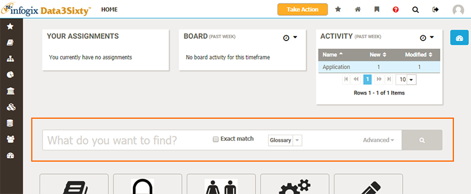
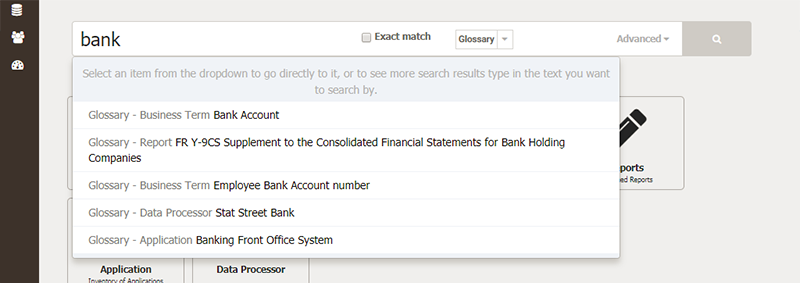
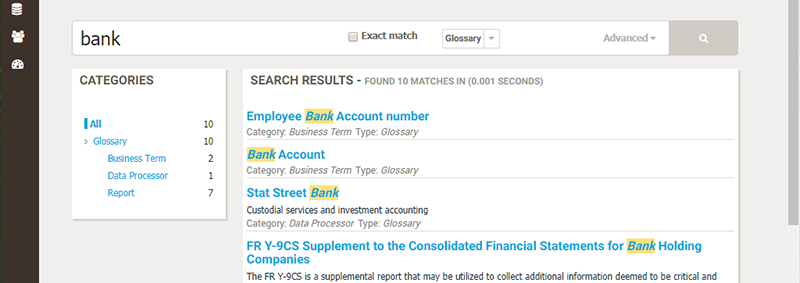
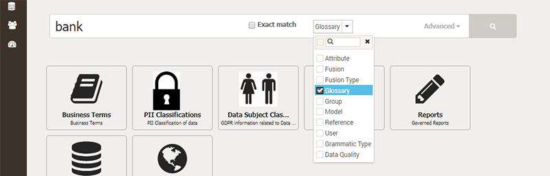
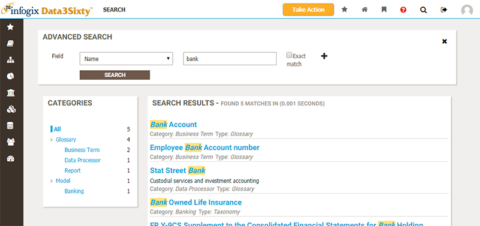
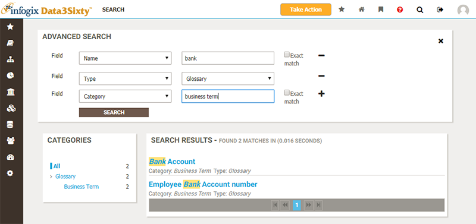
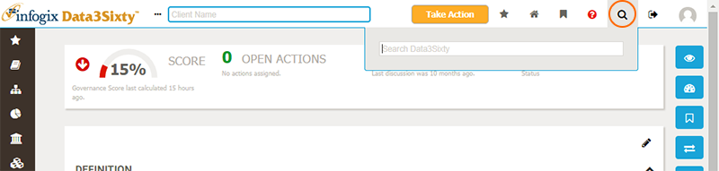
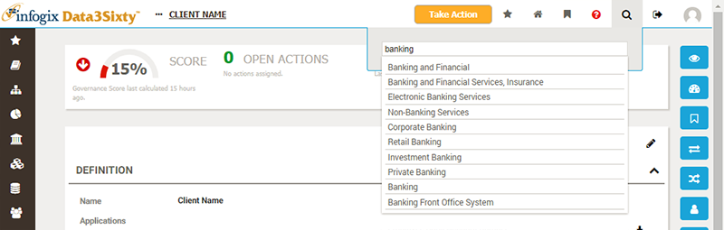
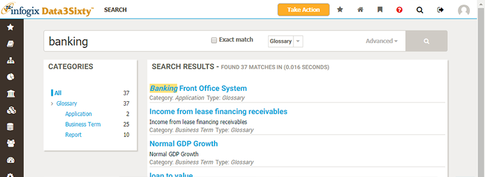

You can search for assets from two locations: either from the Home page (available by clicking on the logo in the top-left of the screen) or from any page, by clicking the Search button in the header.
You can search across the application from the Home page:

Type a keyword into the search field and a number of matching assets will be listed in a drop-down list:

As you type the list is updated. You can either click on an item in the list to navigate to it, or hit Enter to see a list of search results:

The search from the Home page also provides a number of options for refining your search. You can choose the option Exact match to narrow your search to return only those items which exactly match the search terms entered.
You can also choose which parts of the application to search from the drop-down list:

You can also perform an advanced search from the Home page by clicking on the Advanced option, on the right of the search bar. This will take you to a dedicated Search page:

From this page you can specify search criteria for multiple fields:

You can search across Infogix Data3Sixty at any time, by clicking on the Search icon in the header, in the top-right of the screen and typing search terms:

As you type, a drop-down list of matches will be displayed. You can click an item in this list to navigate straight to it:

Alternatively, you can hit Enter to view a list of all matches, with options to refine the search:

Clicking on an asset will then take you to the page for that item.
See the help topic Inspecting assets for more details on how to inspect artifacts, models, quality rules and policies.